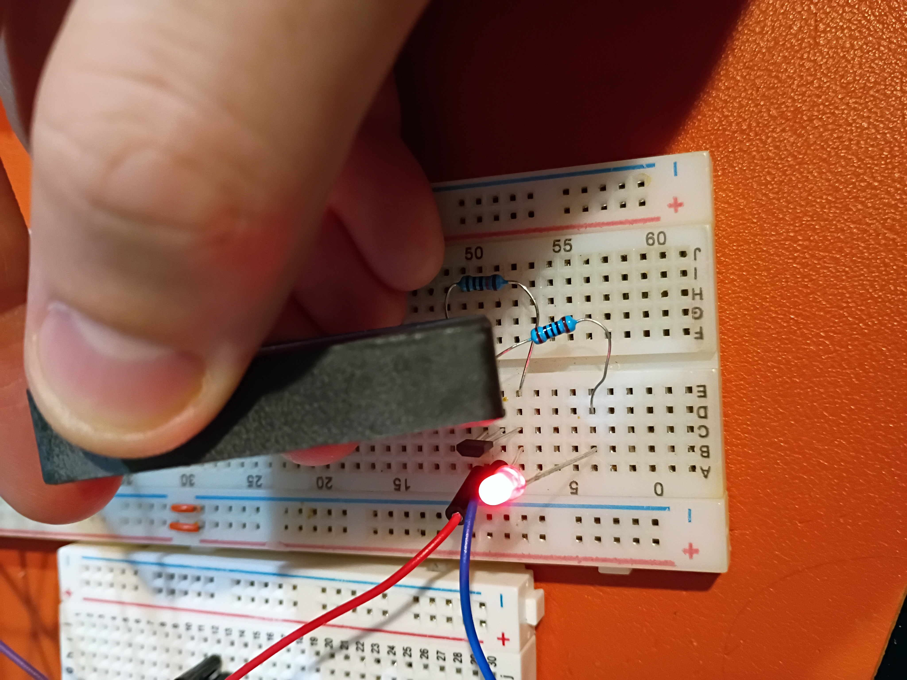

I attempted to implement a circuit to control a 7-segment display using the MAX7219 driver IC, but unfortunately my 7-segment displays are all common-anode, so they are not trivially compatible. While I source common-cathode ones, I tested a basic digit Hall-effect circuit using an LED.
